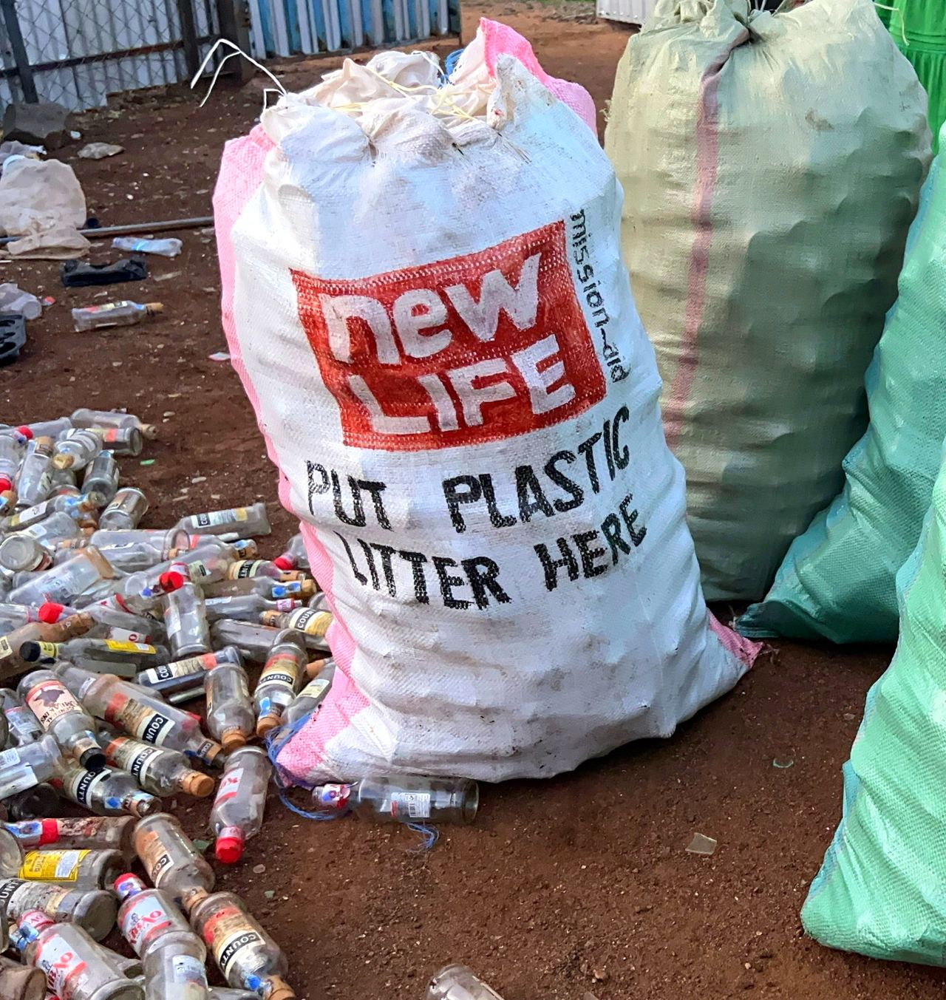
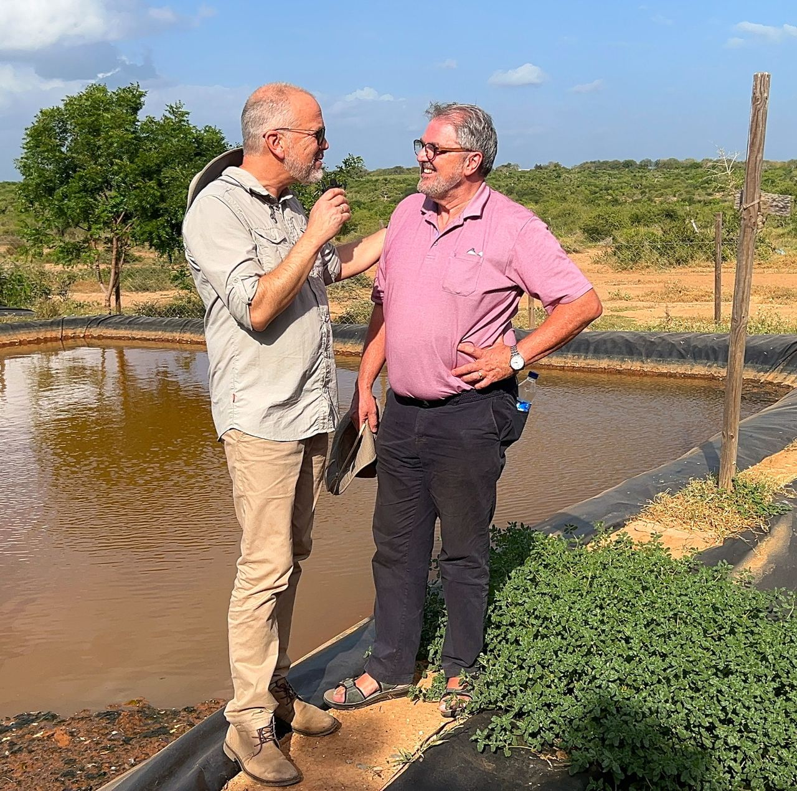
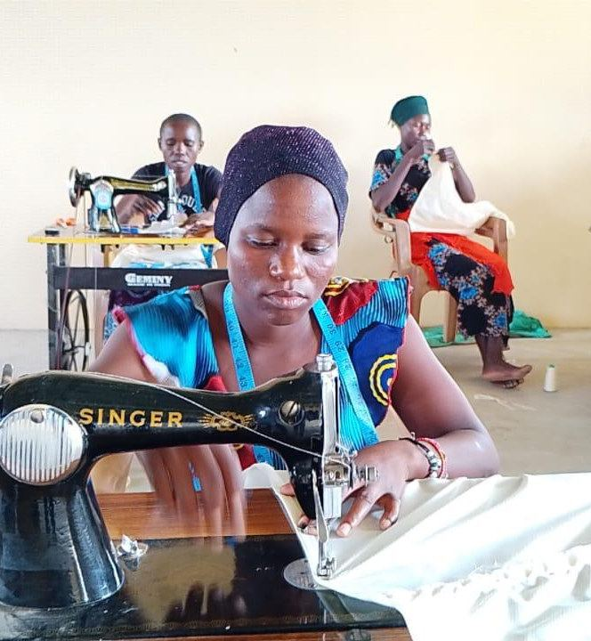
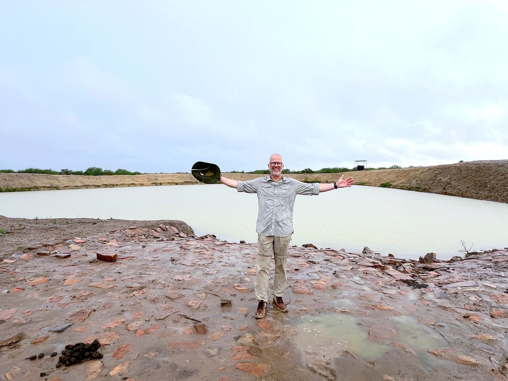
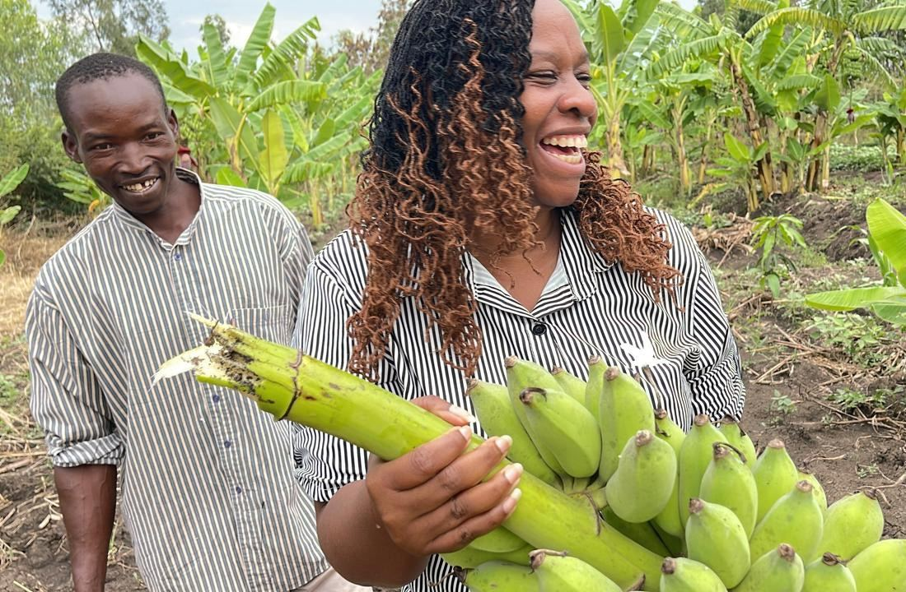
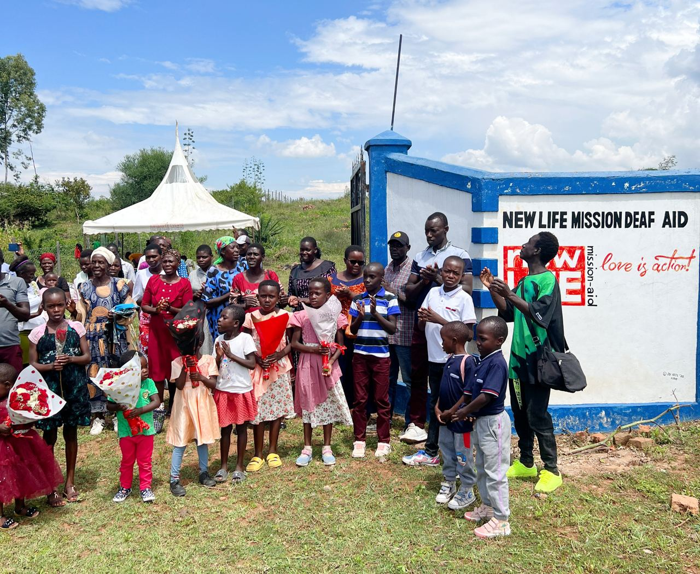

Community Development
Through several different projects, we aim to build a sustainable society that benefits both people and the environment – not only for the present generation, but for children, grandchildren, and the generations to come.


Clean the Country
Have you seen it yourself? On our travels in Kenya, we have witnessed the overwhelming amount of plastic pollution that threatens nature. This is a problem we cannot ignore.
We have already proven that it works!
We carried out a highly successful pilot project in cooperation with the Norwegian Retailers’ Environment Fund. This gave us valuable experience and confirmed that our method works!
What are we doing now?
The project “Together We Clean the Country” is about scaling up this success and taking action:
We aim to make a real difference for the environment by cleaning Kenya of plastic waste.
Collaboration
We work closely with local authorities and recognized partners such as the recycling companies Safisha Nchi Ltd. and TAKA TAKA Solutions Ltd. to ensure an effective and sustainable effort.
Awareness
We organize Awareness Campaigns to educate local communities about the importance of recycling and environmental protection.
Job creation
This project is more than just environmental work! It is also a powerful tool against unemployment. Through our efforts, thousands of people will gain meaningful jobs and a better future.
Join us and help create a cleaner Kenya and increased employment!

Protein production with BSF
Our goal is clear: our development project in Kavunzoni is about giving the local community the tools they need to build an independent and prosperous future – both in terms of food security and economy.
We support the development of long-term, profitable programs that make the local community self-reliant.
The key is circular economy!
Our initiatives are designed with a strong focus on circular economy – where waste becomes a resource, and everything is connected:
- Protein production with BSF: We produce Black Soldier Flies (BSF). These insects convert organic waste and are a fantastic, sustainable source of protein.
- Profitable farming: This protein is used directly as high-quality feed in our farming programs:
- Fish farming: Secures access to fresh fish.
- Poultry production: Provides eggs and meat.
From production to market
To maximize income, we also help the local community organize themselves in cooperatives.
This allows them to jointly:
- Sell the produce (fish, chicken, eggs) more effectively at the market.
- Achieve better prices and bargaining power.
- Secure stable economic growth and ownership of the value chain.
The result: A closed loop that minimizes waste, maximizes resources, and creates lasting food and economic security in Kavunzoni through independent market access.

EWIRA
EWIRA stands for Empowering Women in Rural Areas. This is not just an acronym – it is our commitment to creating economic independence and empowerment for women in rural communities.
We know that when women succeed, entire communities succeed.
What do we do?
We lay the foundation for a new career by training women to become skilled seamstresses. They gain the skills they need to start their own income-generating businesses.
Our Products – Double Purpose
Health Initiative:
Production of reusable sanitary pads that ensure dignity and school attendance for girls.
Education & Sales:
Sewing school uniforms for the schools we already support, as well as producing high-demand items such as bags and clothing for the market.
The success story is well underway!
The project has taken off! In an exciting collaboration with a well-known Polish influencer, EWIRA is now in full operation. We are proud to have a group of 30 dedicated women who are currently undergoing intensive textile training.
These 30 women are now tailoring their own future!

Water
Since 1978, we have witnessed how water can transform lives. Everything begins with WATER – without it, no life can grow, no family can flourish, no hope can rise. Jesus says that He gives the water of life, a water that quenches all thirst and gives eternal life. In the same way, we want to give people access to the life-giving water they need here and now.
Through our community development project in Kavunzoni, and in close cooperation with Kitanda – a Belgian organization – local authorities, and several partners, we have built two large dams holding a total of 110 million liters of water. This water reaches three villages through underground pipes and brings life to agriculture, fish farming – and most importantly, clean drinking water for the residents. Together, we are seeing hope, health, and a brighter future bloom as the water flows.
Now we are taking the next step in Homa Bay, where, together with the Water Supply Directorate, we are planning to drill a new borehole. The goal is to provide thousands of people with fresh, life-giving water – water that quenches thirst, strengthens the body, and reminds us of Jesus’ promise of the water of life, which never runs dry.
Together, we can bring life and hope to even more people.

Agriculture
We believe in sustainability and self-reliance. Through support for various agricultural projects, with a focus on training farmers in effective and responsible farming practices, we are helping to shape a better future.
Our vision is to create projects that lift people out of poverty, enabling them – through their own efforts – to secure both food and income for a dignified life.

Deaf Aid
In Homa Bay, we are running an exciting and forward-looking project aimed at helping deaf individuals become active and integrated members of the local community. We own a property of approximately 6 acres, where we are planning a range of activities that support the goals of the project.
Our goal is to establish an innovation center that offers self-help solutions, microfinancing, and small-scale income-generating projects, including honey and flower production. Deaf Aid Homa Bay aims to be an answer to prayers for the local community, giving people the opportunity to create valuable sources of income, build confidence, and experience meaningful fellowship.
Other project areas
See all projects
Aid and Emergency Relief
We lift people out of poverty by providing vital assistance, improving infrastructure, and offering safety and care.

Education
Education for children and young people provides opportunities, knowledge, and lasting value for individuals, families, and local communities.

Mission
Reaching people with the gospel is an important and natural part of all our projects. The Christian faith is the foundation of our work.
Support us
Give with Vipps, bank transfer or SMS, or become a regular partner and support the work every month.
Become a partner